Periodic conditions of physical quantity along  and
and
 in field-line-following coordinates
in field-line-following coordinates

Since
 and
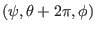 correspond to
the same spatial point, a general physical quantity
and
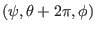 correspond to
the same spatial point, a general physical quantity  expressed in terms of
coordinates
, i.e.,
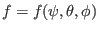, must
satisfy the following periodic condtions along :
expressed in terms of
coordinates
, i.e.,
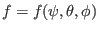, must
satisfy the following periodic condtions along :
Since
and
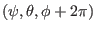 correspond to
the same spatial point, must satisfy the following periodic condtions
along  :
:
Since
and
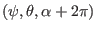 correspond
to the same spatial point, a general physical quantity  expressed in
field-line-following coordinates
, i.e.,
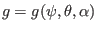, must satisty the following peroidic condition along
:
expressed in
field-line-following coordinates
, i.e.,
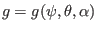, must satisty the following peroidic condition along
:
However,
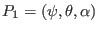 and
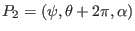 are not usually corresponding to the same spatial point. In fact,
equation (282) implies, for point 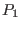, its toroidal angle
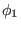 is given by
while for point 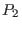, its toroidal angle 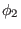 is given by
i.e., and are different by  . From this, we know
that
and
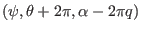
correspond to the same spatial point. Therefore we have the following periodic
condtion:
. From this, we know
that
and
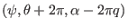
correspond to the same spatial point. Therefore we have the following periodic
condtion:
which involves both and .
yj
2018-03-09